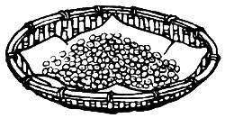

Issue # 39 - May/June 1976
From The Book of Tofu, copyright©1975 by William Shurtleff and Akiko Aoyagi. Excerpts used by permission of Autumn Press, Inc.
The various food-processing industries (bless 'em) seem to be trying hard to alleviate this overcrowded planet's shortage of animal-derived protein. How? By "beefing up" our store-bought rations with "inexpensive" meat substitutes procured from-primarily?the good old soybean. And as they do so, these self-proclaimed wizards of matters comestible are weaving a web of mystery around the useful bean. But now, for us "little guys", there's a book that [1] not only brings the versatile vegetable out of the arcane commercial fog and into our kitchens, but [2] shows and tells us how we all can save grocery money and eat more nutritious meals (WHILE we loosen the hold that the doctored-food moguls have on all our lives and diets!). We're proud, then,to present excerpts from . . .
In Japan, soybeans are only occasionally cooked at home. To save time and the cost of lengthy cooking, most people purchase ready-made soybean dishes, usually at the local delicatessen. Many of these store-bought preparations contain large amounts of shoyu (Japanese soy sauce) and/or sugar to serve as natural preservatives. Whole (tan) soybeans are also available commercially deep-fried in a sweetened batter and sold as Soy Brittle, while black soybeans are often used in confectionary treats.
But when most of us in the West set out to use soybeans, we usually start with those available in their whole, dry form at natural food stores and supermarkets. Presently the least expensive known source of usable protein, whole soybeans are also rich in iron, and vitamins B 1 and B 2 . A truly remarkable food, they contain 1-1/2 times as much protein as any other legume (34% to 38%), and are low in carbohydrates. Many recent cookbooks, especially those emphasizing natural foods, have begun to include a wide variety of recipes using boiled or baked soybeans in Western-tyle salads, soups, casseroles, and spreads.
Fresh, new-crop soybeans?the tastiest type?are generally available from the beginning of November. When storing large quantities, always use cloth rather than plastic sacks. When soybeans are kept over long periods, a small harmless moth and its eggs may appear among the beans. These can be easily removed by sifting and then exposing the beans to direct sunlight for one day.
Once you decide to make soybeans, tofu, and soymilk a basic part of your diet, buy a 60- to 100-pound sack of foodor seed-grade beans at greatly reduced prices from a wholesaler or farmer's supply store. Avoid the little packages retailed at inflated prices.
To ensure best flavor, digestibility, and deactivation of trypsin inhibitor (see the sidebar that accompanies this article), soybeans must be cooked?preferably pressure cooked?until they are very soft. A single bean should be easily crushed between the thumb and ring finger or between the tongue and roof of the mouth. The beans should also be thoroughly soaked in plenty of water, the water discarded, and new water used for cooking . . . this helps remove the oligosaccharides believed to cause flatulence. When pressure cooking, some cooks add 1-1/2 teaspoons oil for each cup of beans in order to prevent the seed coats from clogging the steam escape valve. Some also prefer to add salt and seasonings before pressure cooking. If cooking the beans at only 10 pounds pressure, double the cooking times given in the following recipes.
PLUS
(MAKES 2-1/4 CUPS)
1 cup dry soybeans, rinsed and soaked for 2 or 3 hours in 2 quarts water
2 cups water
A thin wedge of lemon or lime (optional)
Drain and rinse soaked beans . . . and combine with 2 cups water in a pressure cooker. Bring to full pressure (15 pounds) over high heat, then reduce heat to low and simmer for 25 minutes. (If soaked overnight, simmer beans for only 20 minutes.) Remove from heat and allow to stand for 10 to 15 minutes as pressure returns to normal. Cool lid under running cold water and open.
Return cooker to stove, stir in any of the ingredients listed below, and simmer uncovered over low heat for 10 to 15 minutes, or until flavors are nicely married. If necessary, add 1/4 cup water during simmering. Stir from time to time. Serve hot or cold. (Many basic Oriental foods?such as miso and shoyu called for in the following lists?are now available at natural food stores or supermarkets, as well as at Japanese and Chinese markets. Or contact the Japan Food Corporation with offices in San Francisco, Los Angeles, New York, Chicago, Houston, Columbia, Md., and Sacramento, Calif.)
[A] 2 tablespoons red, barley, or Hatcho miso (creamed with a little of the cooking liquid), or 4 teaspoons shoyu, or 1 teaspoon salt. ( Miso is fermented soybean paste . . . one of the basic staples and seasonings in every Japanese kitchen.) If desired, add 1 teaspoon lemon juice or 1 tablespoon butter. For a deliciously rich flavor, add 1 (sautéed) minced onion together with the miso and stir in 1/2 cup grated or 1/4 cup Parmesan cheese just before removing from heat.
[B] 2 to 4 tablespoons molasses (honey or natural sugar) and 1 to 1-1/2 tablespoons miso or shoyu.
[C] 1/2 to 1 cup diced tomatoes, onions, carrots, celery, mushrooms, lotus root, burdock root, sprouts, fresh or dried daikon (giant Japanese white radish), or kombu (dried kelp). Add vegetables alone or in combination. Season with 1/2 teaspoon salt or 2 tablespoons shoyu (or miso). Add 1/2 teaspoon curry powder and 1 clove of crushed garlic with the onions or carrots.
In any of the above recipes, after the beans and seasonings have finished cooking, try sautéing the mixture for a few minutes in a little (sesame) oil.
(MAKES 2-1/4 CUPS)
This recipe is for those who don't own a pressure cooker. You may wish to prepare 2 or 3 times the amounts given and refrigerate the unused portions.
1 cup dry soybeans, rinsed and soaked overnight in 2 quarts water
6-1 /2 to 7 cups water
1/2 to 1 teaspoon lemon juice (optional)
Drain soaked beans and combine with 4 cups water in a heavy pot. Bring to a boil over high heat, then reduce heat to low. Cover pot, leaving lid slightly ajar, and simmer for 2 hours. Add 1 cup water and simmer for 1 hour more. Again add 1 cup water and simmer for 1 hour. Add 1/2 to 1 cup water and simmer for 1 to 1-1/2 more hours, or until beans are soft enough to be easily crushed between the thumb and ring finger. Add seasonings and/ or vegetables and proceed as in the previous recipe.
(SERVES 4 TO 6)
This simple preparation is our favorite for using whole soybeans and is also popular in many Zen temples. The combination of rice and beans increases the total available protein by over 30 percent.
2 cups brown rice
1/2 cup soybeans
2-1/2 cups water
Combine rice and beans in a pressure cooker, rinse well, and drain. Add the 2-1/2 cups water, cover, and bring to full pressure (15 pounds) over high heat. Reduce heat to low and simmer for 25 minutes. Set aside and allow to stand for 10 minutes as pressure returns to normal. Cool pot under running cold water and open. Mix gently with a wooden spoon to distribute soybeans evenly. Cover cooker with a dish towel until ready to serve.
Cook 1 part soybeans with 3-1/2 to 4 parts water as for Pressure Cooked Soybeans (see first recipe of this article). Add diced, sauteed vegetables and salt, shoyu, or miso. Simmer uncovered for 30 to 40 minutes. Season with a favorite spice.
For a tasty summertime dish, add cheese or yogurt to the cooked soup. Pure the mixture in a blender and serve chilled, topped with dollops of yogurt.
(MAKES 4 CUPS)
2 cups soybeans, soaked overnight in water and drained
Oil for deep-frying
Salt, onion salt, or garlic salt
Spread the beans out on a baking sheet and place in a 200° oven for 5 to 10 minutes until beans are dry. Heat oil to 350° in a wok, skillet, or deep-fryer. Deep-fry beans 1 /2 cup at a time for 6 to 8 minutes, or until crisp and golden brown. Drain beans on absorbent paper, season with salt, and serve immediately. Stored in an airtight jar, deep-fried soybeans keep quite well.
(IRI-MAME)
Many delicious varieties of roasted soybeans or soy nuts are now available in the West in natural food and health food stores. Dry-roasted varieties contain a remarkable 47 percent protein. (By comparison peanuts contain only 27 percent protein and almonds and cashews only 19 percent.) They are usually lightly salted and have a ;nut-like flavor and crunchy crisp texture. Oil-roasted varieties are available salted or unsalted with plain, garlic, or barbecue flavors, and contain 37 percent protein.
Roasted soybeans can be eaten like peanuts as a snack, or used to add a crunchy texture and nutlike flavor to a wide variety of salads, sauces, casseroles, and miso preparations. In the West roasted soybeans are also used in health food "candy" such as soy honey or nut bars. In their ground form, they are used in commercial soy spreads.
In Japan, these are the "beans of good fortune" enjoyed on the first day of the lunar spring. Roasted beans covered with multiple coatings of sugar, starch, and nori (dried purple laver) are sold commercially as Mishima Mame and served as a sweet snack. Green soybeans, roasted with salt until they have a crunchy texture and greenish-beige color, are sold as IroriMame.
(MAKES 3 CUPS)
3 cups whole dry soybeans, rinsed and soaked for 5 to 6 hours
Drain beans well, then spread between layers of dry towelling for 1 hour. Transfer to large unoiled cookie tins or baking pans and spread 1 layer thick over the surface of pans. Place in an unheated oven and roast at 200° to 250° for 2 to 2-1/2 hours, or until beans are light brown. Shake pans once every 15 minutes for the first hour, then every 30 minutes thereafter. Do not allow beans?which are inside tan hulls?to turn dark brown. While beans are still slightly soft, remove from oven, salt lightly, and set aside to cool until crunchy. Serve as is or like nuts.
For a salty variety, soak the beans in a mixture of 4 cups water and 2 tablespoons salt before roasting.
In Japan, roasted soybeans are prepared on a community scale in a large screen basket held over a strong flame and shaken like popcorn for about 40 minutes. The flame is then reduced to low and the beans cooked without shaking for 5 to 7 minutes until golden brown.
Many Westerners who have lived or traveled in East Asia find it remarkable that fresh green soybeans have not yet become a favorite summertime vegetable in the West . . . as they are in Japan. The green beans, simmered in the pod until tender, lightly salted, and then cooled are served as a delicious hors d'oeuvre?often with sake or beer?or as part of a meal. From mid-June until October, the beans' brilliant emerald color graces the dining tables of restaurants and private homes throughout Japan.
Immediately after soybean plants are uprooted, the dirt is shaken from the roots, most of the leaves are removed, and about 15 pod-bearing plants, each approximately 2-1/2 feet long, are tied into bundles. About 10 to 12 soybean pods are clustered along the stalk of each plant, and a single 3-inch pod usually contains 3 green soybeans. The plants are taken to markets where they are sold by the bunch. After boiling the beans in the pods, the housewife may use the stems as fuel.
Highly digestible and containing over 12 percent protein, a typical 3-1/2ounce serving of green soybeans supplies more than 40 percent of an adult's daily protein requirement. They also contain as much vitamin C as oranges, and are rich in vitamin B 1 . Although best served fresh and in season, green soybeans may also be frozen or canned like green peas. In the West they are generally available in the latter form.
(SERVES 3 TO 4)
1 pound fresh green soybeans (in pods)
1/2 teaspoon salt
Butter
To shell beans, cover with boiling water and allow to stand for 5 minutes. Drain and cool briefly. Break pods crosswise and squeeze out beans (yielding about 1-1/2 cups).
Bring 1 cup water to a boil in a small saucepan. Add beans and salt and return to the boil, then cover and simmer for 15 to 20 minutes. Drain well and serve hot (like lima beans or green peas) topped with butter. Salt lightly if desired.
Prepared this way, green soybeans also make an excellent addition to salads.
One of the world's finest diet foods, soybean sprouts contain less calories per gram of protein than any other known vegetable food. Although mung bean sprouts are the most pop ular both in the West and in East Asia, soybean sprouts are inexpensive, tasty, and easy to prepare at home. Most contain both the bright yellow soybean and the sprout root which will grow to a length of 3 to 5 inches in 5 to 7 days. Soybean sprouts may be served as a green vegetable throughout the year either parboiled in fresh salads (where they serve as a good source of vitamin C) or in soups, mantled, or baked dishes. For sprouting instructions see The Soybean Cookbook (by Dorothea Van Gundy Jones), or most natural-food cookbooks. One pound fresh sprouts yields 4 cups.
These cakes of cooked soybeans, bound together by a fragrant, white mycelium of Rhizopus mold, have a delectable flavor: fried or deep-fried, they taste remarkably like fried chicken or veal cutlets. Rich in protein (18.3% fresh or 48.7% dried), tempeh is also highly digestible, and Rhizopus serves as an effective deactivator of trypsin inhibitor. Like other fermented soy products (miso, shoyu, or natto, which is sticky fermented whole soybeans) and sea vegetables, tempeh is one of only a few non-meat sources of vitamin B 12 .
Tempeh can be prepared without difficulty in any Western kitchen using either whole soybeans, okara (soybean pulp), or cooked grains (wheat, rice, barley, or rye) fermented alone or mixed with soybeans. In Indonesia, 1/2-cup portions of partially cooked, inoculated soybeans are wrapped in banana leaves, tied, and fermented. For larger scale preparation, use (stainless steel) trays with 1/8-inch holes every 2 inches throughout the top and bottom, or similarly-perforated, sausage-shaped plastic bags 1-1/2 inches in diameter. Be sure that all containers are well washed since even small amounts of oil or salt hinder mold growth.
The starter is available from the U.S. Department of Agriculture, Northern Regional Research Lab., 1815 N. University Ave., Peoria, III. 61604. The Farm (Rt. 1, Box 156, Summertown, Tenn. 38483) is now making up a brochure on tempeh preparation which will soon be available with the starter.
To prepare new starter, carefully scrape darkened (sporulated) mycelium from the surface of the freshly fermented cakes or from the wrapper or tray in which tempeh was fermented. Mix with 1 teaspoon (sterile) water and use in place of commercial starter.
(MAKES 6 CAKES)
1 cup soybeans, washed and soaked for 18 hours in a mixture of 1 quart water and 1 teaspoon vinegar or lactic acid
1/2 teaspoon tempeh starter (Rizopus oligosporus mold spores)
Squeeze beans firmly and repeatedly with one hand in soaking water to remove all seed coats, then carefully pour off water and coats. Refill soaking container with water and repeat until all coats are removed. Combine drained beans and 4 cups water in a pot, bring to a boil, and simmer for 60 minutes. Drain beans, rinse 4 to 5 times under water, then drain well. Allow to cool to body temperature, then mix in starter. Divide inoculated beans into 6 equal portions, placing each at the center of a 7-by-9-inch piece of aluminum foil.
Fold over sides, then ends of foil, sealing tightly, to form a 4-by-3-by-1/2-inch-thick "package". Place packages in a warm clean place or incubator and allow to stand for 24 hours at 88° (or as long as 30 hours at 78°), or until beans are bound together into a cake by a fragrant white mycelium. For best flavor, serve these fresh tempeh cakes as soon as possible, cooked in any of the following ways:
DEEP-FRIED OR FRIED: Deep-fry cakes (or pan-fry on both sides) until crisp and golden brown. Serve topped with shoyu, ketchup, Worchestershire, or any of a number of other sauces. Also delicious in sandwiches and soups.
SAVORY CUTLETS(TEMPEH GORENG): Score both surfaces of 3 fresh tempeh cakes to a depth of 1/8 inch. Combine 3 tablespoons water, 1/2 teaspoon salt, 1/2 clove of crushed garlic, and 1/4 teaspoon coriander. Add tempeh, marinate for 5 minutes, and drain well. Deep-fry in (coconut) oil. Serve as an accompaniment for rice dishes, topped with red-pepper sauce (sambal) if desired.
CRISP CHIPS(TEMPEH KEMUL): Cut 3 tempeh cakes horizontally into paper-thin slices and sun?dry for 5 minutes if desired. Combine 6 tablespoons (rice) flour, 1 clove of crushed garlic, 3/4 teaspoon salt, and 1/4 teaspoon coriander. Mix in enough (coconut) milk to form a fairly thin batter, then add tempeh slices and allow to stand briefly. Deep-fry until crisp, and serve like potato chips.
RICH FILLETS(TEMPEH BACHAM): Combine in a skillet 1/4 grated onion, 3/4 teaspoon salt, 3 to 4 tablespoons brown sugar, and 1-1/4 cups water. Add 3 tempeh cakes (cut crosswise into fourths), bring to a boil, and simmer until all liquid has evaporated. Deep?fry cakes and serve as for Tempeh Goreng.
FIERY SAUTÉ( TEMPEH KERING): Cut 3 tempeh cakes into paperthin 1/2-inch squares and sun-dry for 1 to 2 hours if desired. Deep-fry and drain well. Sauté 1/2 clove of crushed garlic and 1/4 minced onion in 3 tablespoons oil for 5 minutes. Add 2 tablespoons each brown sugar and water, 1 to 2 minced red peppers, 3/4 teaspoon salt, and spices (salam, laos, asam) to taste: sauté for 2 minutes more. Add tempeh slices and sauté for 4 more minutes. Scoop out tempeh with a slotted spoon or spatula, drain briefly over wok or skillet, and serve as a topping for cooked rice.
IN SOUPS: Add diced fresh tempeh to soups and simmer for 30 minutes. Season with salt, miso, or shoyu.
BAKED OR ROASTED: Bake at 350° for about 20 minutes, or until nicely browned and fragrant. If desired, use as the basis for a pizza-type preparation, or serve topped with any of the sauces mentioned above.
Unlike most other grains and pulses, soybeans contain a substance called "trypsin inhibitor" which obstructs the functioning of the pancreas-secreted trypsin enzyme essential for the digestion of protein and the maintenance of proper growth. The "TI" can?and must-be inactivated by cooking. Laboratory tests show that 70 to 80 percent of all the inhibitor present in the soybean must be destroyed if the body is to make use of the full array of nutrients in the bean. They also show that soaking and grinding whole soybeans greatly reduces the cooking time to attain this level of inactivation. Nutritionists recommend that well-soaked whole soybeans be simmered for four to six hours or pressure cookedat 15 pounds?for 20 to 30 minutes.
The correct soaking time for soybeans varies with the air temperature, as shown in the chart above. If tiny bubbles have begun to form on the surface of the soaking water, the beans have been soaked too long. Examine the inside of a bean by breaking it lengthwise into its two halves with your fingertips. If the faces of the two halves are flat and the same color in the center as at the edges, and if each half can be easily broken crosswise into halves, the soaking time has been correct. However, if the faces of the two halves are slightly concave and a little more yellow at the center than at the edges, and if the halves are flexible and rubbery, the beans have not been soaked long enough.
|
|
 |
|
|
|
|
|
|
|
|
|